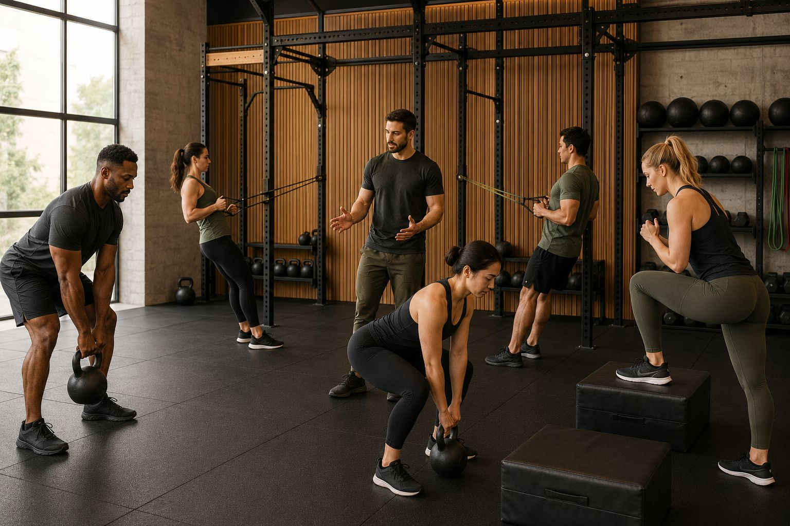
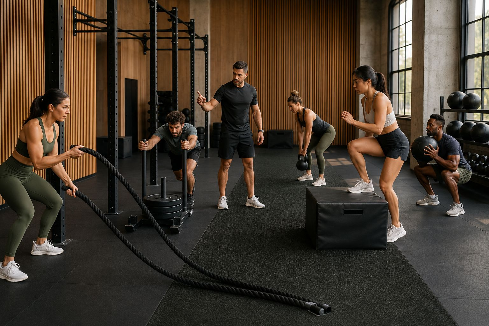
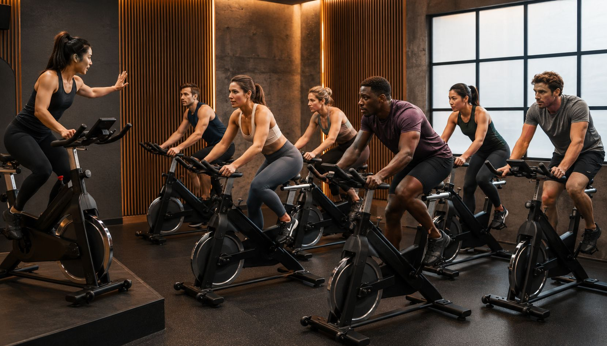
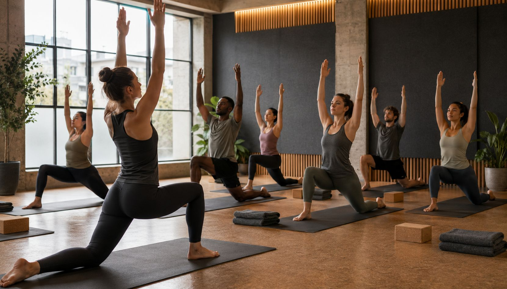
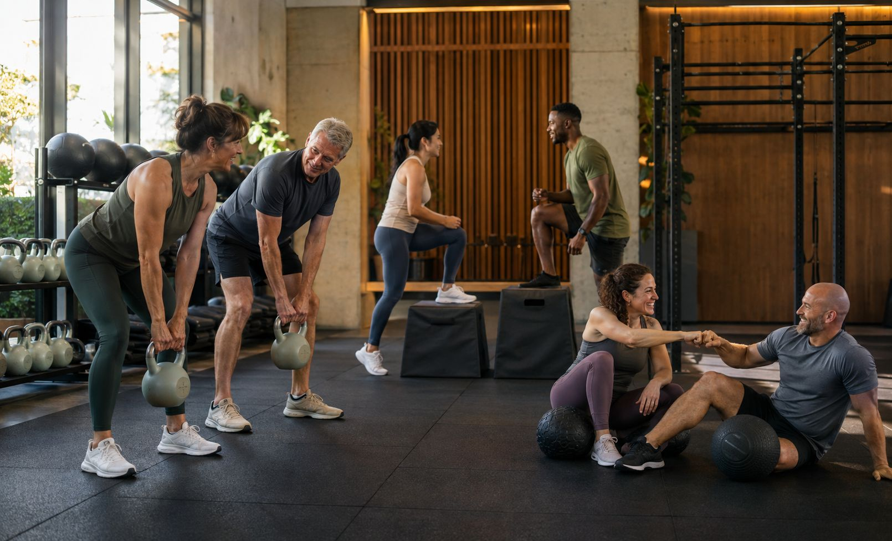

Functional Training
Een allround les voor kracht, coördinatie en uithouding met duidelijke begeleiding.

Groepslessen
Van HIIT tot yoga-fitness: iedere les is opgebouwd om deelnemers te activeren zonder de controle te verliezen.
Lesaanbod

Een allround les voor kracht, coördinatie en uithouding met duidelijke begeleiding.

Cardio met tempo en structuur, ideaal voor leden die graag op muziek werken.

Een actieve les voor mobiliteit, controle en herstel tussen intensieve trainingsdagen.

Korte, scherpe sessies waarin techniek en tempo samenkomen voor een krachtige training.
Buitenles
Wanneer het weer en de planning het toelaten, brengen we de intensiteit naar buiten. De wissel tussen binnen- en buitenprikkels houdt de trainingsweek fris en gevarieerd.
Outdoor sessions gebruiken dezelfde coachingprincipes: duidelijk, veilig en gericht op progressie.